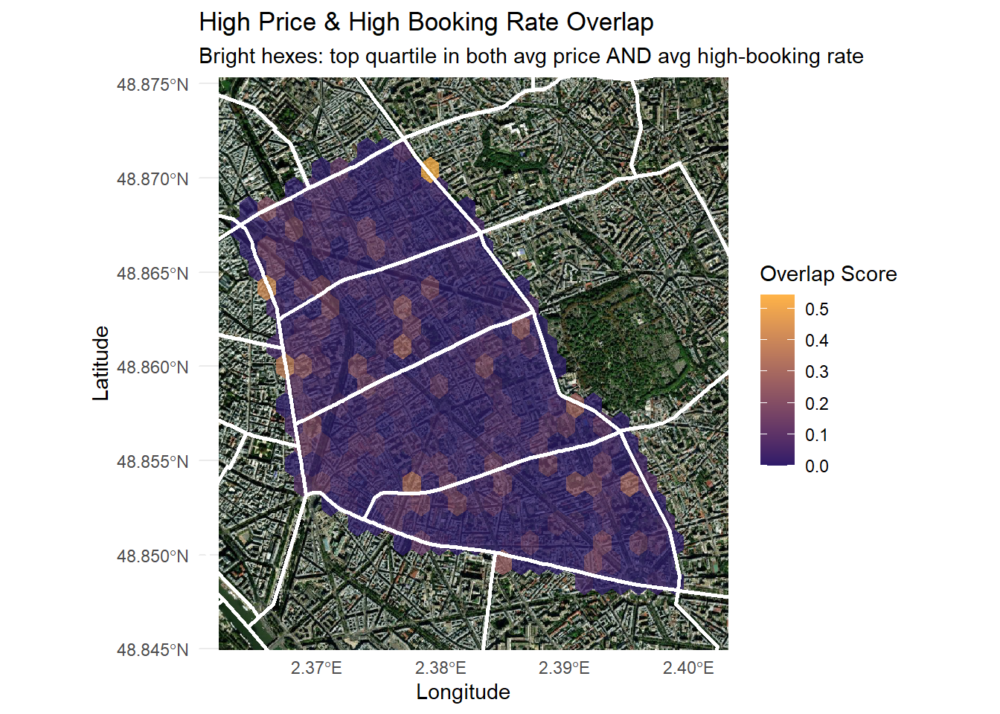

National CatBoost classifier on 374K US listings (0.8668 Kaggle AUC), then retrained hyperlocal on 93K Popincourt, Paris listing-months. The Paris cut revealed a 6x booking rate gap between casual and commercial hosts that price and location cannot close.
Popincourt CatBoost model
national US classifier
commercial vs. casual hosts
across 9 categories
The core modeling problem is binary classification: given a listing's features, will it achieve a high booking rate (conversion rate > 5%)? Part I framed this at national scale using 374K US listings. Part II zoomed into Paris's Popincourt quarter to test whether a gentrifying market inverts the rules found nationally in the US market, specifically whether commercial investment strategies that succeed in markets like Miami fail in a neighborhood shaped by rent control, tourist regulation, and cultural homogeneity.
Three research questions drove Part II, each testable through EDA and validated by SHAP importance rankings.
1. Is price the primary lever controlling booking success?
2. Does host type independently explain booking performance, or is it just a pricing proxy?
3. Does geography within Popincourt create exploitable micro-market advantages?
CatBoost was chosen for its native categorical encoding, which avoids ordinal encoding leakage, and its ordered target statistics, which prevent within-fold target leakage during training. Optuna (40 Bayesian trials) tuned hyperparameters. The central engineering challenge throughout was leakage prevention, TF-IDF and SVD were fit separately inside each CV fold, and neighborhood booking rates were computed out-of-fold with Bayesian shrinkage (λ=30) to avoid the target bleeding into features.
Two datasets from Inside Airbnb at very different scales, one a national US snapshot for Part I and the other a longitudinal Popincourt panel for Part II. Understanding the data, what each feature meant, and how to best engineer them was the majority of the effort. About 75+ features across 9 categories were created, carefully crafted to capture different aspects of the Airbnb ecosystem.
- Part I (US National). 374K listings, Kaggle train+test format, 56 raw columns. Price capped at 99th percentile (~$565). Custom null handling in Polars. Class imbalance addressed with
auto_class_weights=Balanced. - Part II (Paris Popincourt). 93,578 listing-months, 2015-2024 panel. Snapshot date and host cohort year extracted for temporal panel analysis. Host type segmented as casual (1 listing), semi-pro (2–5), commercial (6+).
- Text NLP (Part I). 6 text columns combined per listing. TF-IDF with 5K features, bigrams, min_df=5, sublinear_tf. TruncatedSVD to 40 components. Both fit per fold inside CV to prevent leakage.
- Leakage prevention. Neighborhood booking rate computed out-of-fold with Bayesian shrinkage (λ=30). TF-IDF/SVD fit separately inside each CV fold. OOF fold structure matched exactly across all leaky features.
- Popincourt model (Part II). 0.966 holdout AUC. Threshold swept across 0.20-0.78 and set at 0.54 for best F1, yielding accuracy 0.91, precision 0.88, recall 0.88, F1 0.88. 34 features, depth=9.
- US National model (Part I). 0.8668 on the Kaggle leaderboard, 0.8516 on a leakage-safe 5-fold stratified CV OOF estimate. 78 features, depth=10, tuned with Optuna over 40 Bayesian trials.
The Popincourt analysis was structured around three investor questions:

What the data says to do (and what to avoid)
The biggest thing this project reinforced is that you have to actually research the domain before you touch the data. Understanding how Inside Airbnb structures its datasets let me extract snapshot dates from picture URL columns, temporal information that wasn't available as a clean feature anywhere else in the data. That kind of thing only happens when you read the documentation, understand the source, and look for what's implicit rather than just what's labeled. The other part is being okay when the data contradicts your starting assumptions. Going in, price and location were the obvious levers. They weren't. Adapting the analysis around what the data was actually showing, rather than defending the original hypotheses, is where the real finding came from.